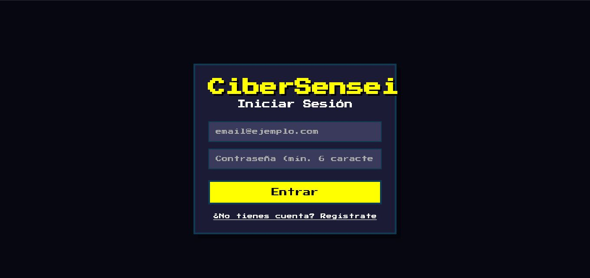
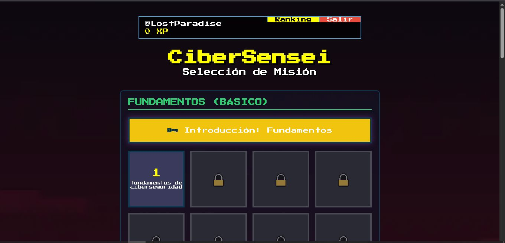
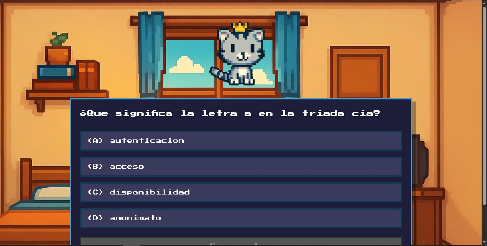
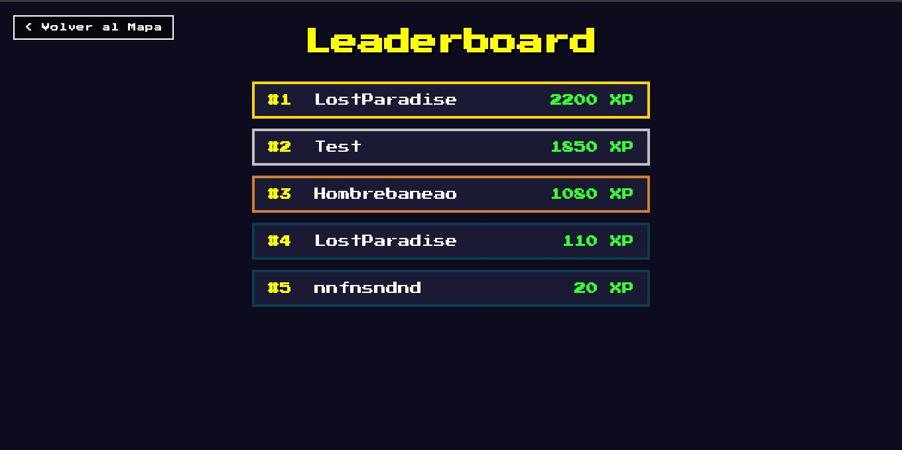
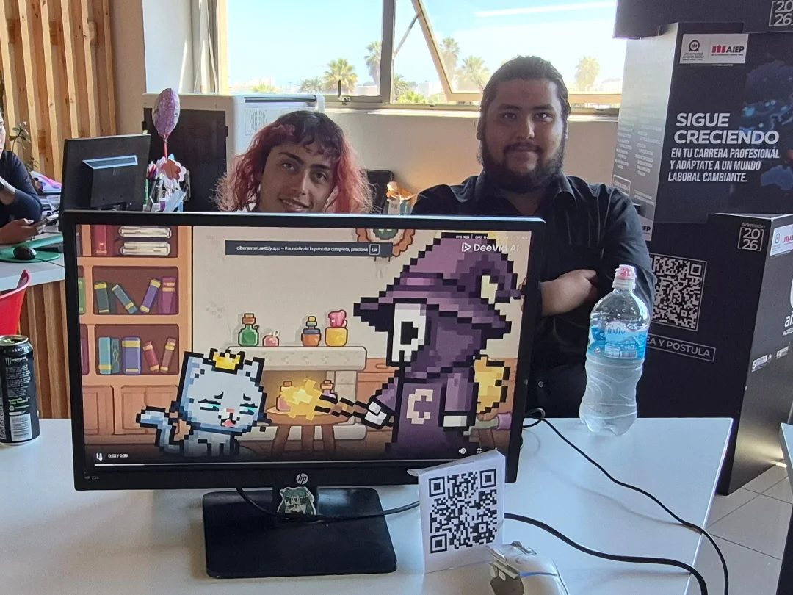
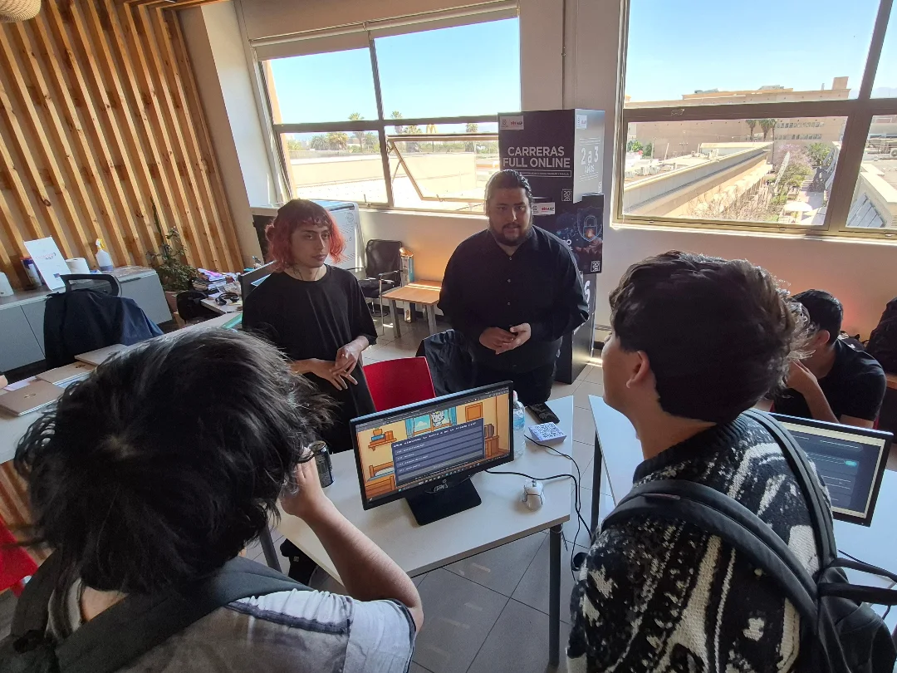
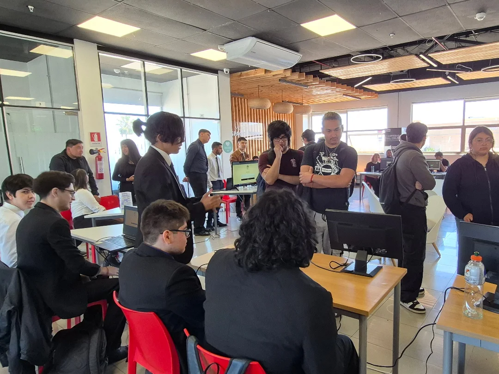

CyberSensei – Plataforma gamificada de aprendizaje en ciberseguridad
Aplicación web educativa que enseña conceptos de ciberseguridad mediante niveles interactivos, desafíos y sistema competitivo.
Contexto del proyecto
CyberSensei fue desarrollado como proyecto final del Taller de Proyecto de Especialidad durante mi formación como Técnico en Ciberseguridad.
El objetivo del proyecto fue diseñar una plataforma educativa que enseñara conceptos de seguridad informática de forma interactiva, utilizando mecánicas de gamificación para mejorar la comprensión y participación de los usuarios.
El proyecto fue desarrollado en colaboración con un compañero de equipo, integrando desarrollo web, diseño de experiencia de usuario y contenidos relacionados con ciberseguridad.
Problema que aborda
Uno de los principales desafíos en ciberseguridad es la falta de concientización y formación práctica en temas como phishing, gestión de contraseñas o ingeniería social.
CyberSensei busca abordar este problema mediante una experiencia interactiva que permite aprender conceptos de seguridad digital a través de niveles progresivos y desafíos gamificados.
Funcionalidades principales
- Sistema de autenticación: Los usuarios pueden registrarse e iniciar sesión para acceder a la plataforma y guardar su progreso.
- Niveles progresivos de aprendizaje: El sistema presenta distintos niveles que permiten avanzar desde conceptos básicos hasta desafíos más complejos de ciberseguridad.
- Desafíos y preguntas técnicas: Cada nivel incluye preguntas relacionadas con conceptos clave de seguridad informática como la triada CIA, buenas prácticas de seguridad y amenazas comunes.
- Sistema de ranking (leaderboard): Los usuarios acumulan puntos de experiencia (XP) y pueden competir en un ranking global.
- Gamificación: El aprendizaje se estructura mediante mecánicas similares a juegos educativos como Duolingo.
Tecnologías utilizadas
- Frontend React, Vite, TypeScript
- Backend / Base de datos Supabase, Auth, Database, Storage, Edge Functions
- Estilo CSS con estética Pixel Art retro
Arquitectura del sistema
El sistema fue diseñado como una aplicación web moderna que integra una interfaz interactiva con un backend que gestiona autenticación, almacenamiento de datos y progreso del usuario.
Supabase fue utilizado para gestionar:
- autenticación de usuarios
- base de datos de progreso y puntuaciones
- almacenamiento de información del juego
Evidencia visual del proyecto




Demo del proyecto
Aprendizajes del proyecto
Este proyecto permitió desarrollar habilidades en:
- desarrollo full-stack de aplicaciones web
- diseño de experiencias educativas mediante gamificación
- integración de sistemas de autenticación y bases de datos
- comunicación de conceptos de ciberseguridad de forma interactiva
Impacto del proyecto
CyberSensei fue presentado durante la exposición final del Taller de Proyecto de Especialidad, instancia en la que los estudiantes presentan sus desarrollos ante docentes y compañeros de la carrera.
Durante esta jornada el proyecto fue destacado como uno de los desarrollos más sobresalientes del día, recibiendo comentarios positivos por parte del equipo docente, especialmente por su enfoque innovador de enseñanza de la ciberseguridad mediante gamificación.
Este reconocimiento validó el enfoque del proyecto y demostró el potencial de utilizar experiencias interactivas para mejorar la concientización en seguridad digital.


